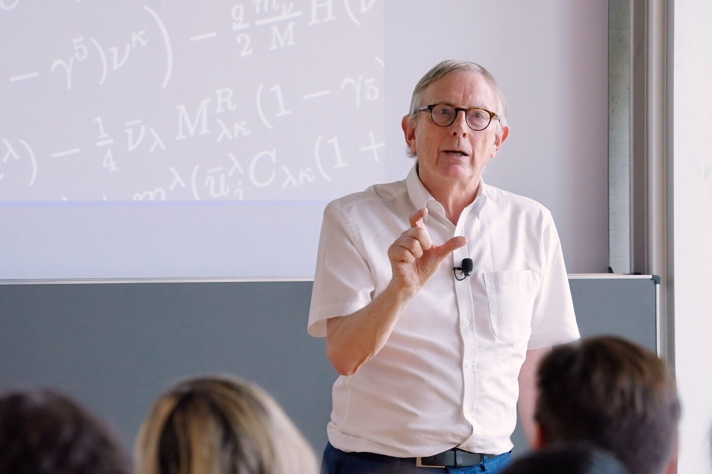
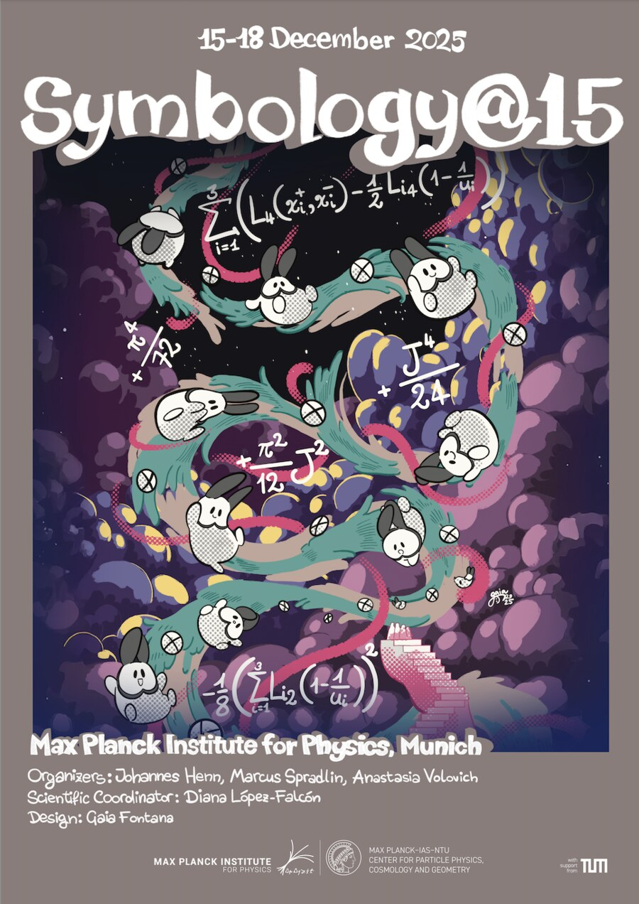

Outreach
Physics belongs to everyone. Our group enjoys sharing the excitement of fundamental research with the public — through talks, discussions, and dedicated outreach material.
Scattering Amplitudes
www.scattering-amplitudes.com is an outreach website created as part of the ERC Consolidator Grant Novel Structures of Scattering Amplitudes. It explains our research field to a general audience and collects news, videos, and background material.
Broad-audience lectures
An example: From the motion of the planets to elementary particle physics (ICTP-SAIFR, São Paulo, July 22, 2015) — a lecture tracing how the same drive to understand motion connects Kepler's planets to the quantum world of the LHC. On the same theme, see the outreach article From the Motion of Planets to Quantum Field Theory — on the hidden symmetries of orbits, energy levels, and elementary particle interactions — published in The Institute Letter (Institute for Advanced Study), Summer 2015.
Public events we organized
For the public event "What holds the world together?" at the Max Planck Institute for Physics, we welcomed Nima Arkani-Hamed, theoretical physicist at the Institute for Advanced Study, Princeton, and Armin Nassehi, sociologist at LMU Munich. Both videos are part of the ERC grant AMPLITUDES (www.scattering-amplitudes.com); video production: KUK Filmproduktion GmbH.
-

Graham Farmelo at MPP, July 31, 2025.
Science meets art

Clear lines can carry deep ideas — in physics as in drawing. For our workshop Symbology@15 (Max Planck Institute for Physics, December 2025), artist and physicist Gaia Fontana created a manga-style poster world in which the mathematical "symbols" of scattering amplitudes come to life.